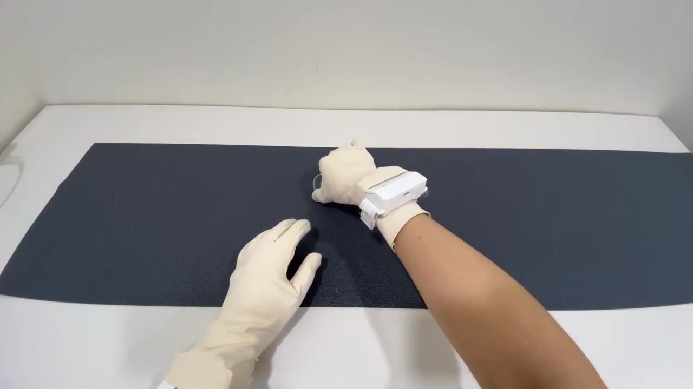
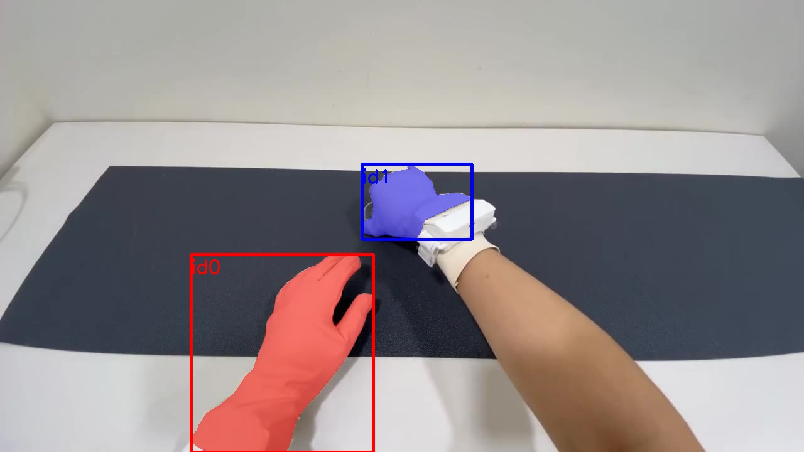

Millions of hand videos. Which ones can a robot learn from?


SAM 3.1 finds every hand and object, frame by frame.
150 / 150frames with both gloved hands
0.0 s
1.7 s
3.3 s
4.7 s
cut at touch
Cut at the moment of touch.
Every cut is scored against tactile glove data.
Illustration. The scoring model is being built.
A 0 to 100 score for every clip.
Seven checks, combined by a model whose weights you can read.
Checked against real sensors, not guesses.
0–0%contact labels that match the tactile gloves, 138,629 frames
0 mmfingertip to object while grasping, from motion capture
0grasp clips in HOT3D to test robot copying
GraspGrade
Find the hand videos a robot can learn from.
SAM 3.1 · Muse Spark · Allegro hand